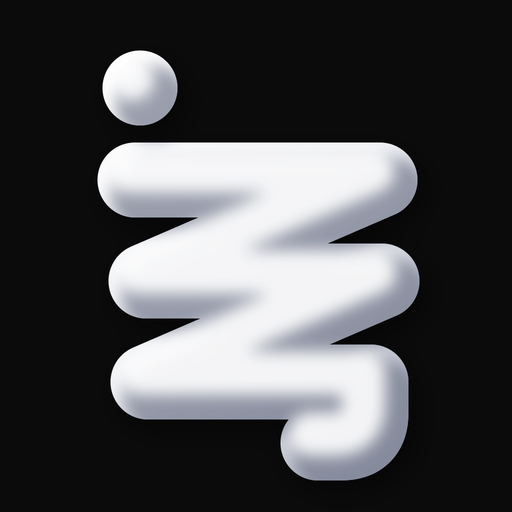
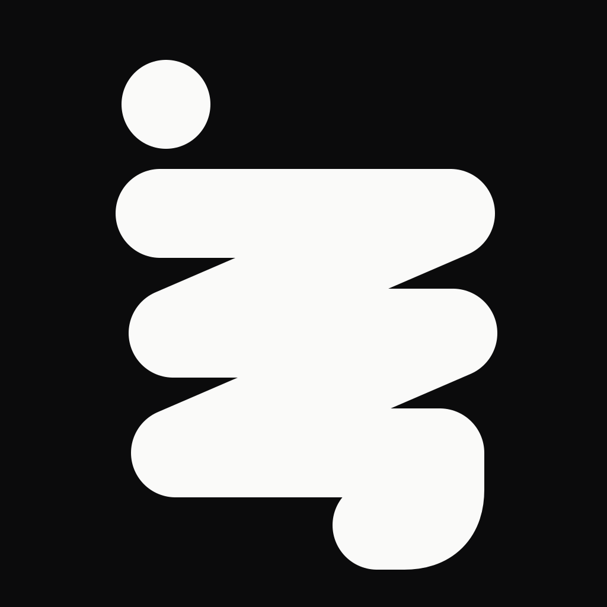
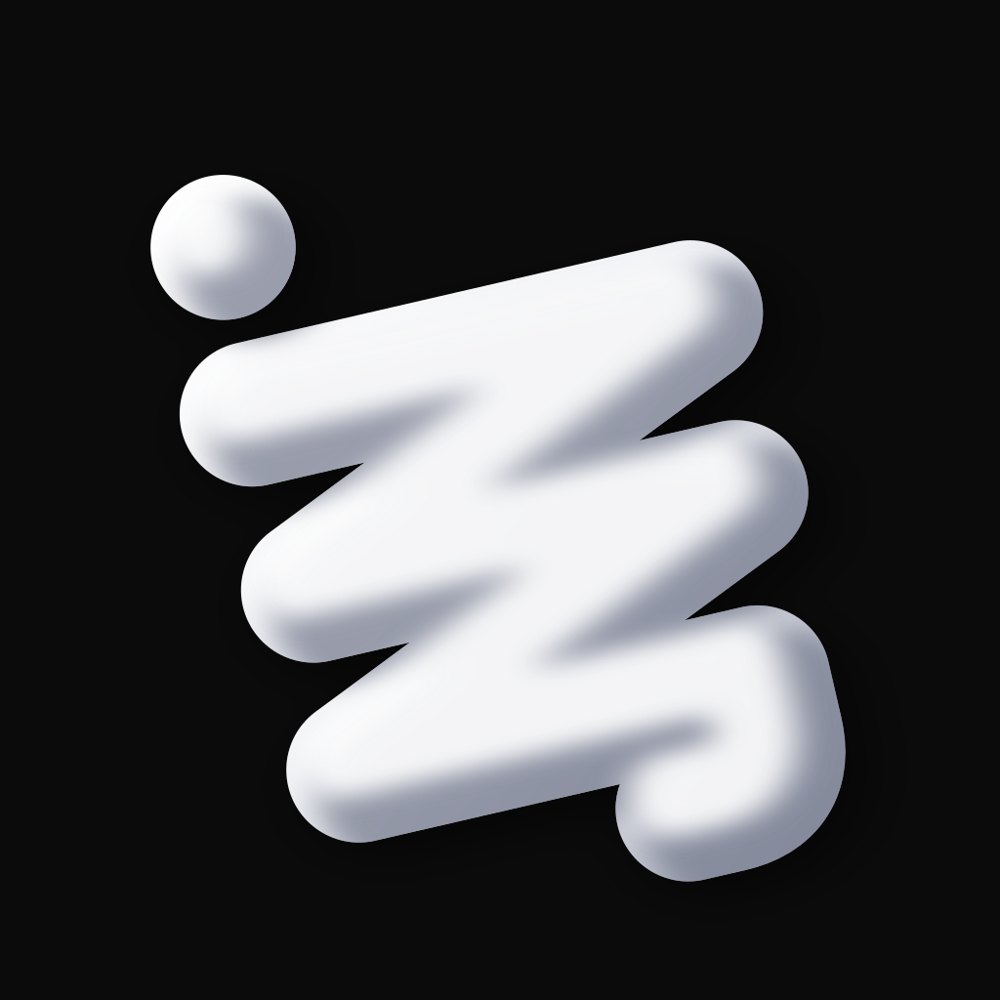
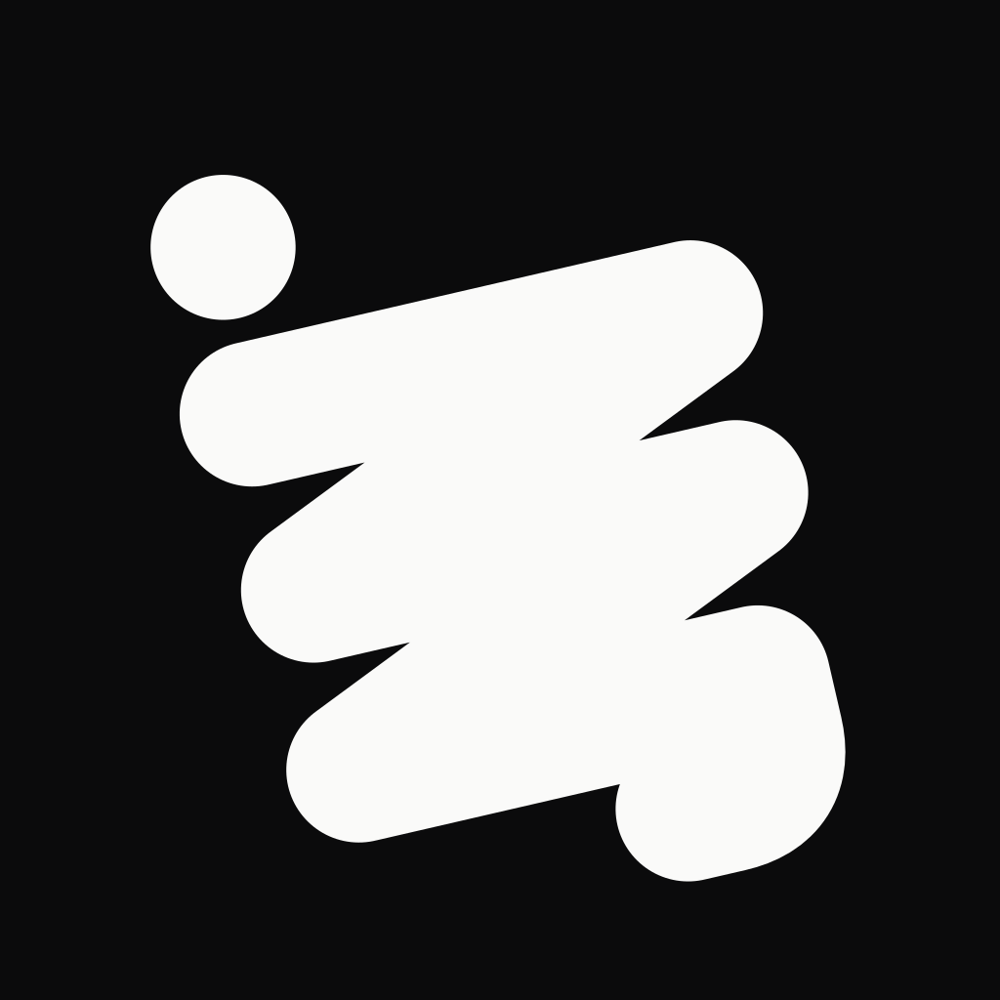
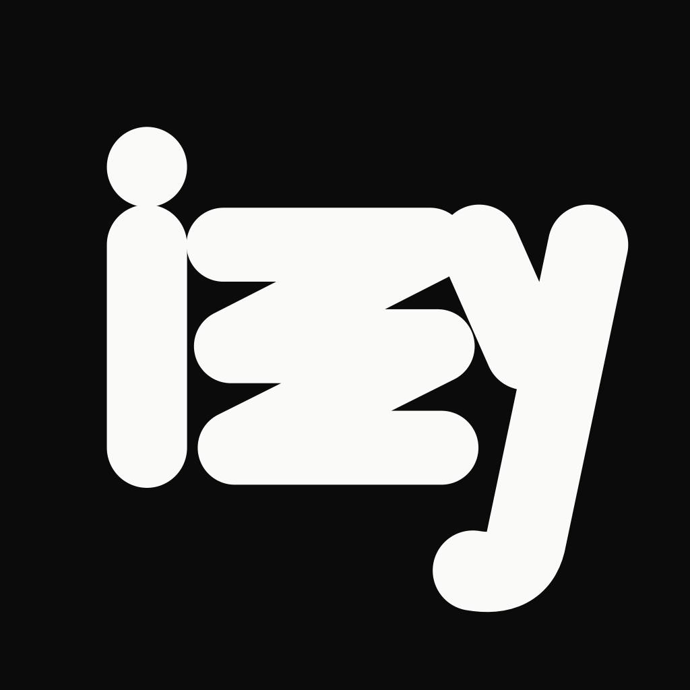
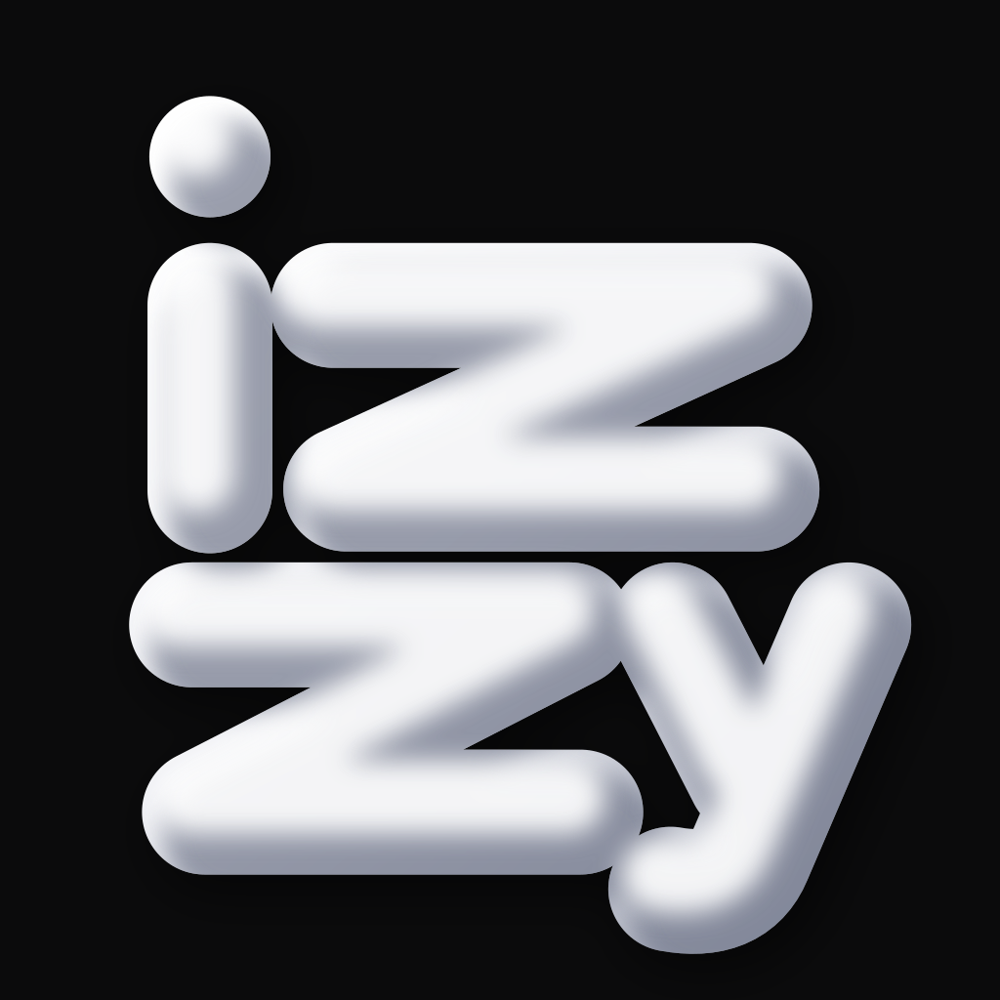
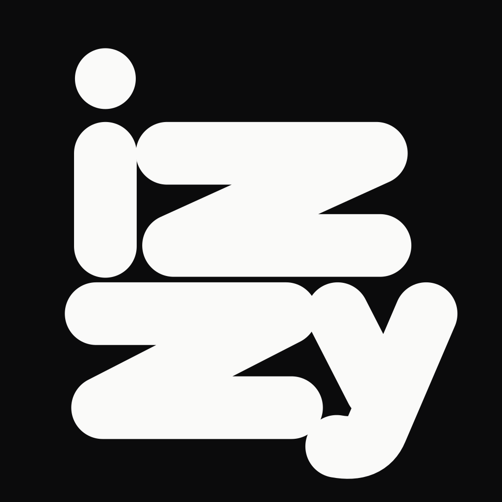

Aひと筆iz zy を縦に折り返す  60 29 単色 i の軸から y の尾まで、一本の帯を三度折り返して書く。いまのマークと同じ「一つながりの塊」で、輪郭がいちばん強い。 詰める点：小さくすると izzy ではなく記号として読まれる。点と塊の間隔。
B傾きA を13°傾ける  60 29 単色 同じ骨格を傾け、いまのマークの斜めの流れを残す。現行からの距離がいちばん小さい。 詰める点：傾けるほど文字としては読みにくくなる。正方形の隅の余白。
Cならびi と y を柱に、間に zz 60 29 単色 横一列のまま、i と y を柱にして zz を押し込み、正方形に収める。名前としていちばん素直に読める。 詰める点：zz が詰まって細くなる。29pt では zz が一本に見えやすい。
D2段iz / zy に割る  60 29 単色 iz と zy を2段に積み、太らせた文字どうしを接して一つの面にする。文字は太いまま正方形を埋められる。 詰める点：中央で2段が接する密度。y の尾と下段の z の重なり。